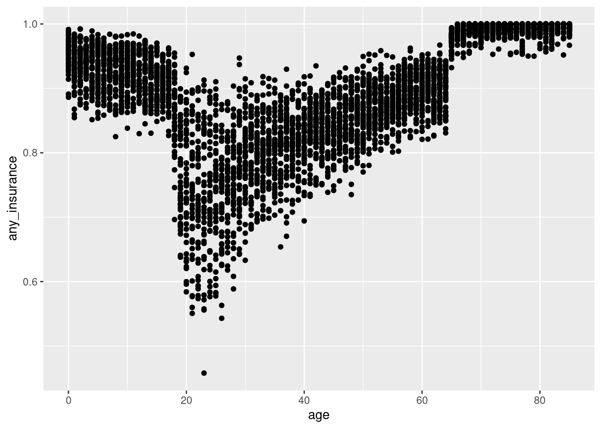
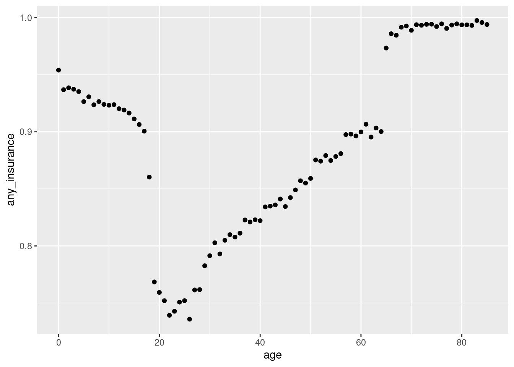
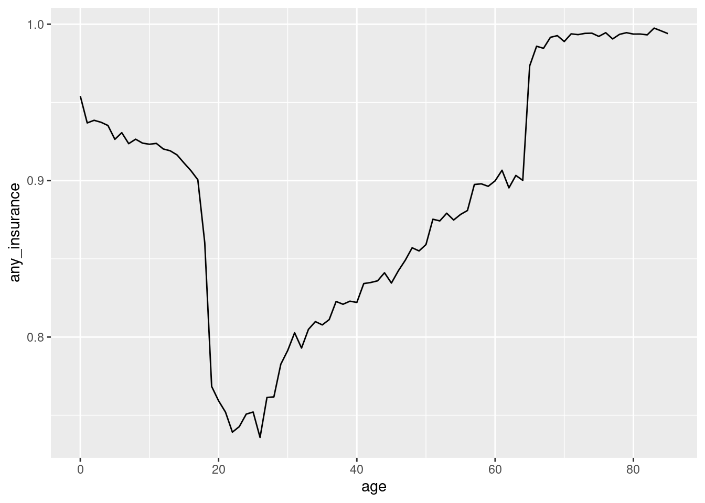
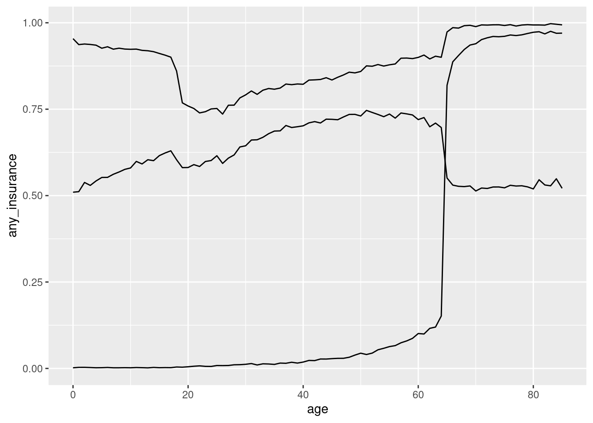
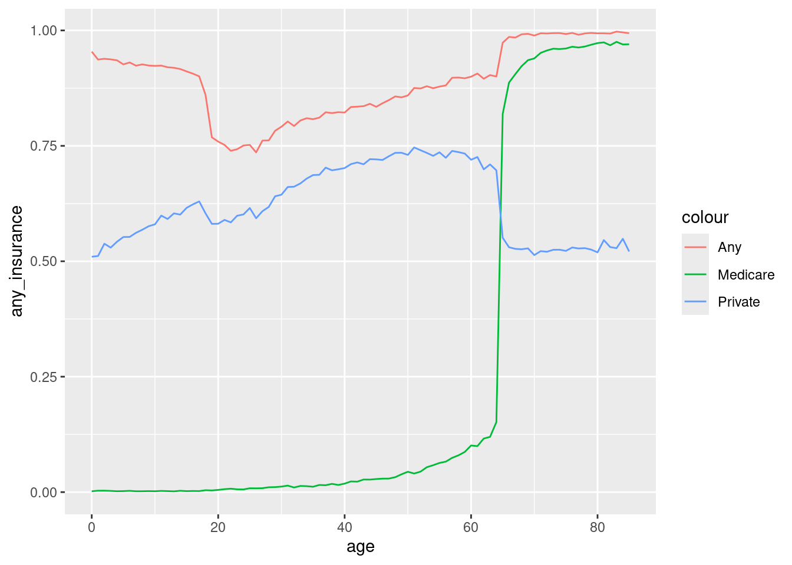
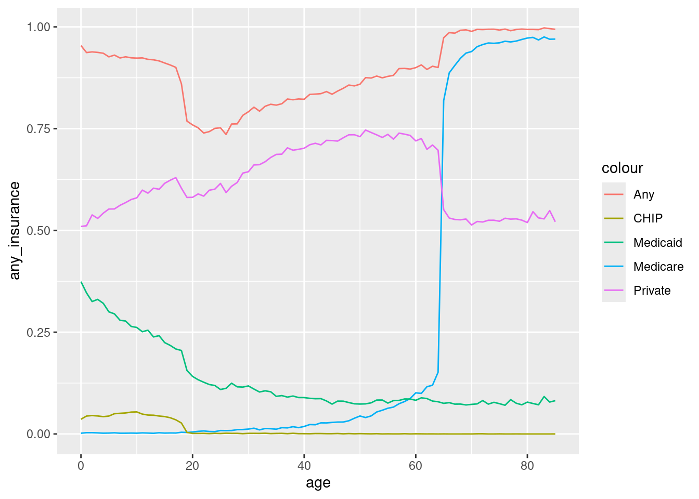
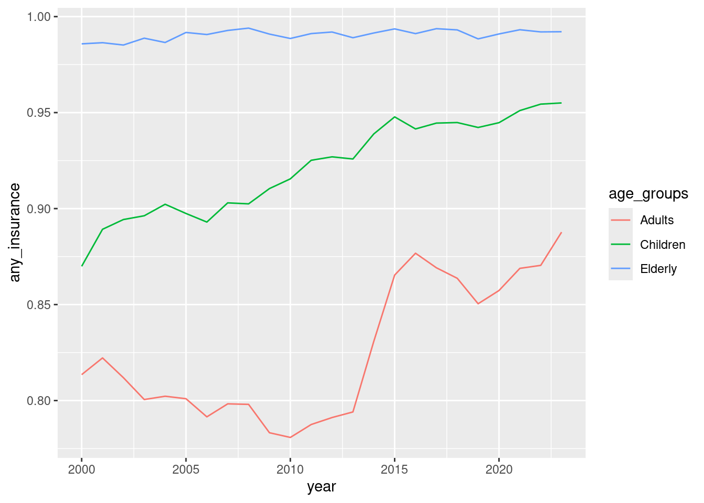
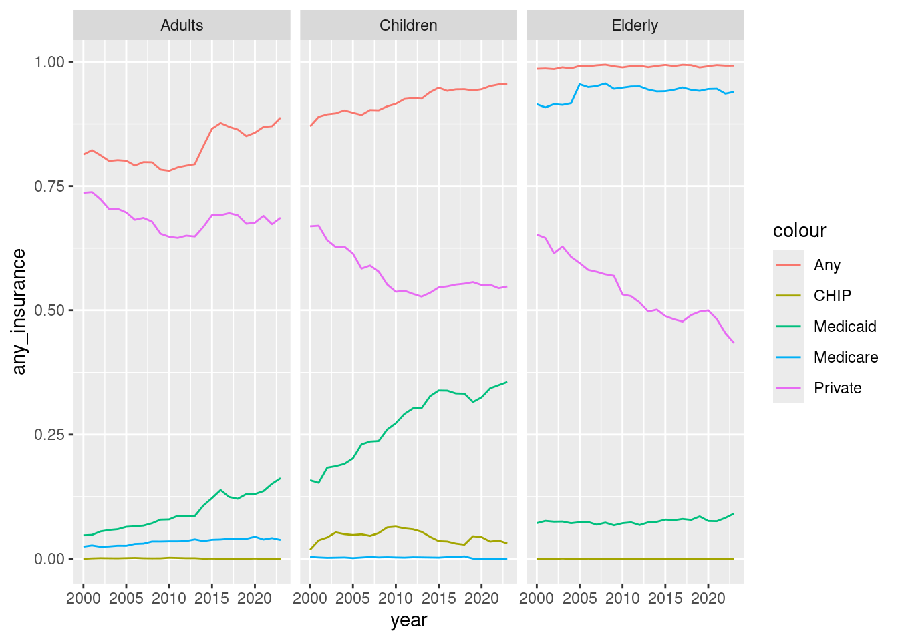

── Attaching core tidyverse packages ──────────────────────── tidyverse 2.0.0 ──
✔ dplyr 1.1.4 ✔ readr 2.1.5
✔ forcats 1.0.0 ✔ stringr 1.5.1
✔ ggplot2 3.5.1 ✔ tibble 3.2.1
✔ lubridate 1.9.3 ✔ tidyr 1.3.1
✔ purrr 1.0.2
── Conflicts ────────────────────────────────────────── tidyverse_conflicts() ──
✖ dplyr::filter() masks stats::filter()
✖ dplyr::lag() masks stats::lag()
ℹ Use the conflicted package (<http://conflicted.r-lib.org/>) to force all conflicts to become errors
Rows: 4128 Columns: 11
── Column specification ────────────────────────────────────────────────────────
Delimiter: ","
chr (1): sex
dbl (10): year, age, pop, any_insurance, private_insurance, chip_insurance, ...
ℹ Use `spec()` to retrieve the full column specification for this data.
ℹ Specify the column types or set `show_col_types = FALSE` to quiet this message.Reading in data and basic data manipulation using R
Getting started
In this page we will build on our work in the previous page, where we learned how to read-in data and conduct some basic data manipulation operations.
Getting back to where we were
Last time, we saved our work in a file called “nhis_working_data.csv” in a directory that you chose (or the default directory). We will read in that file using the same read_csv command that we used to download the original data. Before we can do that, however, we need to acitvate the tidyverse packages:
library(tidyverse) data<-read_csv(“nhis_working_data.csv”)
We can see from the output that we have attached the tidyverse packages and opened the NHIS file that we were working on last time. To double check, make sure that you have the variables over65 and age_minus_65 in data.
Visualizaing data
Plotting point-based data
We can use the ggplot function to plot data. We will start by plotting the relationship between age and insurance coverage. ggplot uses a set of ideas that can be roughly classified as data, aesthetics, and geometries. We feed in the data to ggplot, tell it which variables correspond to which aesthetic elements, and use a geometry to plot the data. For example, for “point” or “scatter” plots, we use the geom_point geometry which requires the aesthetics x and y. Here’s the code to plot the age pattern of insurance coverage:
data|>ggplot(aes(x=age, y=any_insurance))+geom_point()
In this code, ggplot says that we are creating a new plot; the aes function let’s us define our aesthetics, and geom_point says that we are plotting point data. The x aesthetic is the age variable and the y aesthetic is the any_insurance variable. The plot looks like this:

There are a lot of points there! That is because data contains an observation for each age-year-sex cell; let’s summarize our data to the age level (remember that pop holds the size of each cell).
data|>group_by(age)|>summarize(any_insurance=weighted.mean(any_insurance, pop))|>ggplot(aes(x=age, y=any_insurance))+geom_point()

This graph is much easier to read and demonstrates that insurance coverage is higher among older individuals and children than people in the “middle” age range.
Plotting line-based data
In order to dive into the patterns we are seeing in the insurance coverage data in more detail, we will first switch to plotting these data as lines charts rather than scatter plots. We can make this switch by replaceing geom_point with geom_line:
data|>group_by(age)|>summarize(any_insurance=weighted.mean(any_insurance, pop))|>ggplot(aes(x=age, y=any_insurance))+geom_line()

This line chart shows the same basic pattern as the scatter plot. Now we will make more sophisticed use of geom_line to help us see what is happening in insurance coverage by age. Specifically, we do not have to specify all of the aesthetics in ggplot; we can also specify them in the geom_line command AND we can combine several of them together using the + sign. Let’s plot any_insurance, mcare_insurance, and private_insurance first (note the use of across to get the weighted mean for each insurance type):
data|>group_by(age)|>summarize(across(c(any_insurance,mcare_insurance,private_insurance), ~weighted.mean(., pop)))|>ggplot(aes(x=age))+geom_line(aes(y=any_insurance))

Hmm… this doesn’t look so easy to read because all of the lines look identical. We can fix that by telling geom_line that there is an aesthetic color that will take on various values.
data|>group_by(age)|>summarize(across(c(any_insurance,mcare_insurance,private_insurance), ~weighted.mean(., pop)))|>ggplot(aes(x=age))+geom_line(aes(y=any_insurance,color=“Any”))+geom_line(aes(y=mcare_insurance, color=“Medicare”))+geom_line(aes(y=private_insurance,color=“Private”))

Now we can see that the increase in insurance coverage at age 65 is from Medicare coverage, which rises from essentially 0% to almost 100% after people turn 65. However, this doesn’t explain what is happening among kids. Let’s expand the insurance types we are considering to include CHIP and Medicaid too:
data|>group_by(age)|>summarize(across(c(any_insurance,mcare_insurance,private_insurance), ~weighted.mean(., pop)))|>ggplot(aes(x=age))+geom_line(aes(y=any_insurance,color=“Any”))+geom_line(aes(y=mcare_insurance, color=“Medicare”))+geom_line(aes(y=private_insurance,color=“Private”))

This graph demonstrates that the decline in insurance coverage around 18 years of age comes from reductions in Medicaid and, to a lesser extent, CHIP coverage.
Looking at the line plots, it appears that there are three main groups that we would like to think about: children, adults, and the elderly. Let’s define a variable, age_group that assigns each cell to one of these three groups. We will use a new command, case_when to do this. case_when is a function that allows us to create new variables based on a series of conditions. Here is the code to create the age_group variable:
data|>mutate(age_groups=case_when(age<=18“Children”,age<=64“Adults”,TRUE~“Elderly”))
Remember to assign the results back to data!
Check your work by counting these levels:
# A tibble: 3 × 2
age_groups n
<chr> <int>
1 Adults 2208
2 Children 912
3 Elderly 1008Now that we have the age_group variable, we can use it to plot the insurance coverage data by age group over time. We will use year as the x aesthetic and age_group as the color aesthetic.
data|>group_by(age_groups,year)|>summarize(across(c(any_insurance,mcare_insurance,private_insurance), ~weighted.mean(., pop)))|>ggplot(aes(x=year, group=age_group))+geom_line(aes(y=any_insurance)
`summarise()` has grouped output by 'age_groups'. You can override using the
`.groups` argument.
This graph shows that insurance coverage has been increasing for children throughout this time period and that there was a dramatic increase in insurance coverage for adults in 2014.
Plotting with multiple panels
We can use the facet_wrap function to create multiple panels in a single plot. This function takes a formula that specifies the variable that we want to use to create the panels. We will make a plot that shows each of our age groups and allows us to see how insurance coverage has changed over time for each type of coverage.
data|>group_by(age_groups,year)|>summarize(across(c(any_insurance,mcare_insurance,private_insurance,chip_insurance,mcaid_insurance), ~weighted.mean(., pop)))|>ggplot(aes(x=year))+geom_line(aes(y=any_insurance,color=“Any”))+geom_line(aes(y=mcare_insurance, color=“Medicare”))+geom_line(aes(y=private_insurance,color=“Private”))+geom_line(aes(y=chip_insurance,color=“CHIP”))+geom_line(aes(y=mcaid_insurance,color=“Medicaid”))+facet_wrap(~age_groups)
`summarise()` has grouped output by 'age_groups'. You can override using the
`.groups` argument.
Practice
Here are some exercises that you can use as practice to help you make sure that you have understood the concepts. In some cases you will need to look at the helpfiles. You can do this by typing ?function_name in the console.
Create a line plot that shows the relationship between age and the proportion of people with insurance coverage before and after the ACA was implemented. Please use
facet_wrapto create a two panel graph and show trends for each of the listed insurance types.Look at the help for
geom_barandgeom_col. Choose the appropriate function (either will work, but will require different setup steps). Create a bar plot that shows the proportion of people with each insurance type by before vs. after the ACA, our three age groups, and gender.